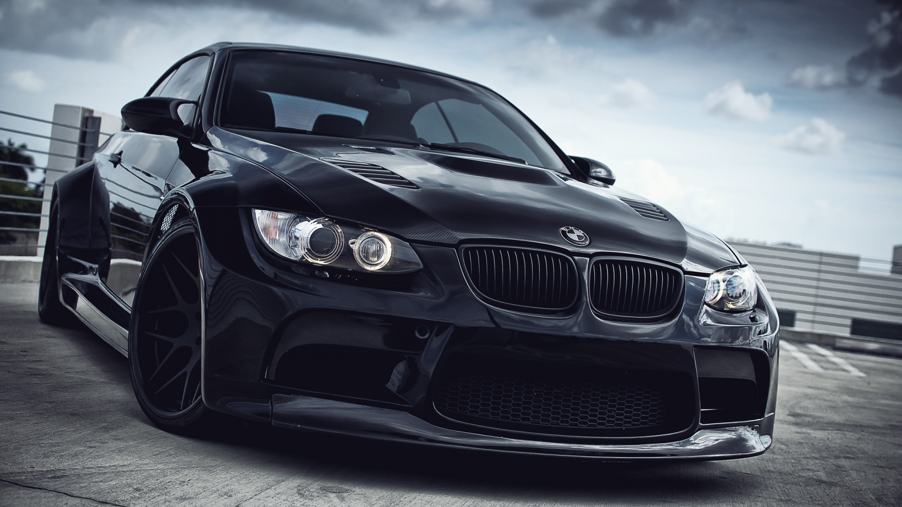

BMW
Название компании
Название компании – BMW – расшифровывается как «Баварские моторные заводы» (Bayerische MotorenWerke). Эта автомобильная компания, которая специализируется на выпуске
мотоциклов, легковых, спортивных автомобилей, автомобилей высокой проходимости. Штаб-квартира
BMW находится в столице федеральной земли Бавария, городе Мюнхен. Логотип компании намекает на
авиационное прошлое и настоящее компании – это белый пропеллер на фоне синего неба. Кроме того,
синий и белый – официальные гербовые цвета Баварии.

История BMW
История BMW начинается с двух небольших авиамоторных фирм, созданных соответственно Карлом
Раппом (Karl Rapp) и Густавом Отто (Gustav Otto) (сыном Николауса Августа Отто, изобретателя
двигателя внутреннего сгорания) в 1913 году в Мюнхене. В следующем году начинается Первая Мировая
война, и германское государство начинает испытывать большую потребность в авиационных двигателях.
Это подвигает двух конструкторов объединиться в один завод. В июле 1917 года этот завод
регистрирует название Bayerische MotorenWerke, и марка BMW обретает жизнь. Но с окончанием войны
Раппа и Отто ожидает полнейший упадок из-за поражения Германии и данного ей запрета на
производство авиадвигателей. Тем не менее предприимчивые руководители BMW быстро обнаруживают другу
ю нишу, в которой может пригодиться их способность производить мощные моторы. Сначала начинают
производиться мотоциклетные двигатели, а затем на заводе проходит уже полный цикл производства и
сборки мотоцикла.
Выполненные мной задания
© Запотылок Ольга